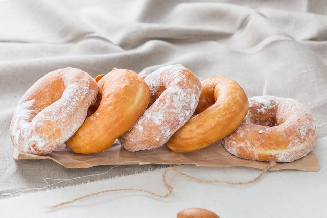
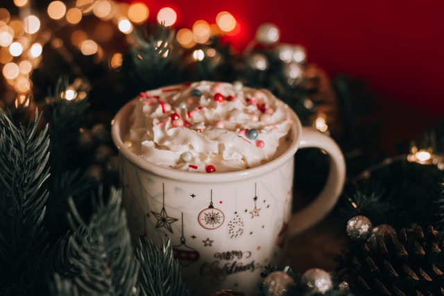

Discussion
I always associate Christmas with snow and vivid green and red colors, and my excitement on Christmas morning. Thus, I wanted this brunch to reflect the snow and morningtime.
Recipes
-
Donuts

My first time making donuts, I ended up overcooking them to the point that they were deemed by a taster as "biscotti." However, I managed to make successful donuts afterward!
I have linked a recipe by Jess Gonzalez on Food52 for powdered donuts, which I think help with the snowy vibe of December!
-
Hot chocolate

Hot chocolate is one of my classic wintertime treats, so I thought it would be great to include for Christmas brunch.
Specifically for Christmas, I found a peppermint hot chocolate recipe published on StoneGable. I personally love making hot chocolate with a lot of whipped cream and chocolate and caramel syrup.